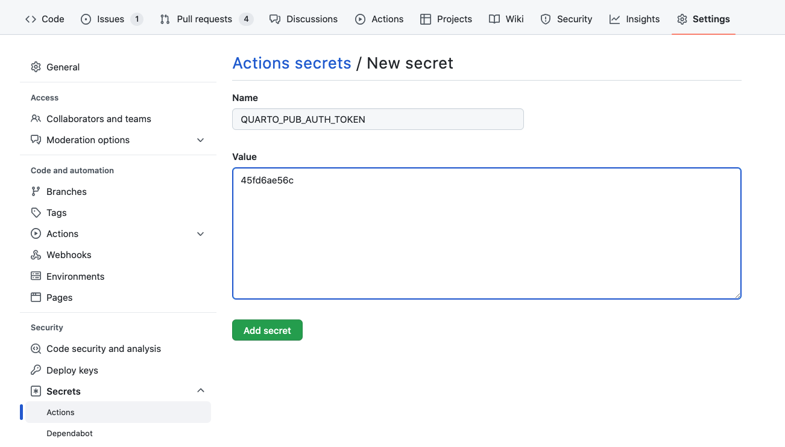

Quarto Pub
Overview
Quarto Pub is a free publishing service for content created with Quarto. Quarto Pub is ideal for blogs, course or project websites, books, presentations, and personal hobby sites.
It’s important to note that all documents and sites published to Quarto Pub are publicly visible. You should only publish content you wish to share publicly. Note also that sites can be no larger than 100 MB and have a soft limit of 10 GB of bandwidth per month.
There are two ways to publish content to Quarto Pub (both are covered in more detail below):
Use the
quarto publishcommand to publish content rendered on your local machine (this is the recommend approach when you are getting started).If you are using GitHub, you can use a GitHub Action to automatically render your project and publish the resulting content whenever your code changes.
Before attempting your first publish, be sure that you have created a free Quarto Pub account.
Above we noted that Quarto Pub sites are publicly visible and have some limits on size and bandwidth usage. If you want to authenticate users, host larger sites, or use a custom domain, consider using a professional web publishing service like Netlify instead.
Publish Command
The quarto publish command is the easiest way to publish locally rendered content. From the directory where your project is located, execute the quarto publish command for Quarto Pub:
quarto publish quarto-pubIf you haven’t published to Quarto Pub before, the publish command will prompt you to authenticate. After confirming that you want to publish, your content will be rendered and deployed, and then a browser opened to view your site.
A record of your previous publishes will be stored in a _publish.yml file within the project or document directory. This file stores the service, id, and URL of the published content. For example:
- source: project
quarto-pub:
- id: "5f3abafe-68f9-4c1d-835b-9d668b892001"
url: "https://njones.quarto.pub/blog"Account information is not stored in this file, so it is suitable for checking in to version control and being shared by multiple publishers.
You can customize the behavior of quarto publish by providing the following command line options:
| Option | Behavior |
|---|---|
--no-prompt |
Do not prompt to confirm publish actions. |
--no-browser |
Do not open a browser after publish. |
--no-render |
Do not re-render prior to publish |
To publish a document rather than a website or book, provide the path to the document:
quarto publish quarto-pub document.qmdDefault Site
In addition to publishing documents and sites to paths within your Quarto Pub sub-domain (e.g. https://username.quarto.pub/mysite/) you can also designate one of your sites as the default site that users see when they navigate to your main sub-domain (e.g. https://username.quarto.pub). This is an ideal place to publish a blog or personal home page.
To promote one of your sites to the default site, go to your admin page at https://quartopub.com, navigate to the site you want to promote, check the Default Site option, then Save your modified options:

GitHub Action
Using the quarto publish quarto-pub command to publish locally rendered content is the most simple and straightforward way to publish. Another option is to use GitHub Actions to render and publish your site (you might prefer this if you want execution and/or rendering to be automatically triggered from commits).
There are a few different ways to approach rendering and publishing content. Below, we’ll provide a how-to guide for publishing with GitHub Actions. For more conceptual background on the various approaches, see the discussion on Rendering for CI.
Publish Record
Prior to attempting to publish with a GitHub Action, you should have completed at least one publish using the Publish Command (described immediately above). This publish will create a _publish.yml file that records the publishing destination to be used by the GitHub Action. For example:
- source: project
quarto-pub:
- id: "5f3abafe-68f9-4c1d-835b-9d668b892001"
url: "https://njones.quarto.pub/blog"Do not proceed to the next step(s) until you have a _publish.yml that indicates your publishing destination.
Freezing Computations
To make sure that R, Python, and Julia code is only executed locally, configure your project to use Quarto’s freeze feature by adding this to your _quarto.yml:
_quarto.yml
execute:
freeze: autoNow, fully re-render your site:
quarto renderIf you have executable code in your project you’ll notice that a _freeze directory has been created at the top level of your project. This directory stores the results of computations and should be checked in to version control. Whenever you change a .qmd file with executable code, it will automatically be re-run during your next render and the updated computations will be stored in _freeze.
Note that an alternative approach is to execute the code as part of the GitHub Action. For now we’ll keep things simpler by executing code locally and storing the computations by using freeze. Then, further below, we’ll cover [Executing Code] within a GitHub Action.
Publish Action
Add a publish.yml GitHub Action to your project by creating this YAML file and saving it to .github/workflows/publish.yml:
.github/workflows/publish.yml
on:
push:
branches: main
name: Quarto Publish
jobs:
build-deploy:
runs-on: ubuntu-latest
steps:
- name: Check out repository
uses: actions/checkout@v2
- name: Set up Quarto
uses: quarto-dev/quarto-actions/setup@v2
- name: Render and Publish
uses: quarto-dev/quarto-actions/publish@v2
with:
target: quarto-pub
QUARTO_PUB_AUTH_TOKEN: ${{ secrets.QUARTO_PUB_AUTH_TOKEN }}Quarto Pub Credentials
The final step is to configure your GitHub Action with the credentials required for publishing. To do this you need to create a Quarto Pub personal access token and then configure your GitHub action to be able to read it:
If you don’t already have a personal access token, go to the Quarto Pub account profile page, and click on New Token to create a token. Give this token a memorable name, and copy the token to the clipboard.
Add the Quarto Pub access token to your repository’s action Secrets (accessible within repository Settings). You will see a New repository secret button at the top right:

Click the button and add the personal access token from step 1 as a secret named
QUARTO_PUB_AUTH_TOKEN:
Ignoring Output
It’s important to note that you don’t need to check your _site or _book directory into version control (if you have done this in the past you know it makes for very messy diffs!). Before proceeding you should add the output directory of your project to .gitignore. For example:
.gitignore
/.quarto/
/_site/If you’ve already checked these files into source control you may need to remove them explicitly:
git rm -r _siteCommit to Publish
Once you’ve specified your publishing action and Quarto Pub credentials, and pushed your updated repository (including the _freeze directory) to GitHub, your action will run with this and subsequent commits, automatically rendering and publishing to Quarto Pub.
Executing Code
If you prefer, you can also configure a GitHub Action to execute R, Python, or Julia code as part of rendering. While this might reflexively seem like the best approach, consider the following requirements imposed when you execute code within a CI service like GitHub Actions:
You need to reconstitute all of the dependencies (R, Python, or Julia plus the correct versions of required packages) in the CI environment.
If your code requires any special permissions (e.g. database or network access) those permissions also need to be present on the CI server.
Your project may contain documents that can no longer be easily executed (e.g. blog posts from several years ago that use older versions of packages). These documents may need to have
freezeindividually enabled for them to prevent execution on CI.
Prerequisites
The best way to ensure that your code can be executed within a GitHub Action is to use a virtual environment like venv or renv with your project (below we’ll provide example actions for each). If you aren’t familiar with using these tools check out the article on using Virtual Environments with Quarto to learn more.
Once you’ve decided to execute code within your GitHub Action you can remove the freeze: auto described above from your _quarto.yml configuration. Note that if you want to use freeze selectively for some documents or directories that is still possible (for a directory, create a _metadata.yml file in the directory and specify your freeze configuration there—this is what Quarto does by default for the posts folder of blog projects).
Example: Jupyter with venv
Here is a complete example of a GitHub Action that installs Python, Jupyter, and package dependencies from requirements.txt, then executes code and renders output to Quarto Pub:
.github/workflows/publish.yml
on:
push:
branches: main
name: Quarto Publish
jobs:
build-deploy:
runs-on: ubuntu-latest
steps:
- name: Check out repository
uses: actions/checkout@v2
- name: Set up Quarto
uses: quarto-dev/quarto-actions/setup@v2
- name: Install Python and Dependencies
uses: actions/setup-python@v4
with:
python-version: '3.10'
cache: 'pip'
- run: pip install jupyter
- run: pip install -r requirements.txt
- name: Render and Publish
uses: quarto-dev/quarto-actions/publish@v2
with:
target: quarto-pub
QUARTO_PUB_AUTH_TOKEN: ${{ secrets.QUARTO_PUB_AUTH_TOKEN }}Example: Knitr with renv
Here is a complete example of a GitHub Action that installs R and package dependencies from renv.lock, then executes code and renders output to Quarto Pub:
.github/workflows/publish.yml
on:
push:
branches: main
name: Quarto Publish
jobs:
build-deploy:
runs-on: ubuntu-latest
steps:
- name: Check out repository
uses: actions/checkout@v2
- name: Set up Quarto
uses: quarto-dev/quarto-actions/setup@v2
- name: Install R
uses: r-lib/actions/setup-r@v2
with:
r-version: '4.2.0'
- name: Install R Dependencies
uses: r-lib/actions/setup-renv@v2
with:
cache-version: 1
- name: Render and Publish
uses: quarto-dev/quarto-actions/publish@v2
with:
target: quarto-pub
QUARTO_PUB_AUTH_TOKEN: ${{ secrets.QUARTO_PUB_AUTH_TOKEN }}Additional Options
It’s possible to have a Quarto project in a larger GitHub repository, where the Quarto project does not reside at the top-level directory. In this case, add a path input to the invocation of the publish action. For example:
- name: Render and Publish
uses: quarto-dev/quarto-actions/publish@v2
with:
target: quarto-pub
path: subdirectory-to-use
QUARTO_PUB_AUTH_TOKEN: ${{ secrets.QUARTO_PUB_AUTH_TOKEN }}By default, quarto publish will re-render your project before publishing it. However, if you store the rendered output in version control, you don’t need the GitHub action to re-render the project. In that case, add the option render: false to the publish action:
- name: Render and Publish
uses: quarto-dev/quarto-actions/publish@v2
with:
target: quarto-pub
render: false
QUARTO_PUB_AUTH_TOKEN: ${{ secrets.QUARTO_PUB_AUTH_TOKEN }}